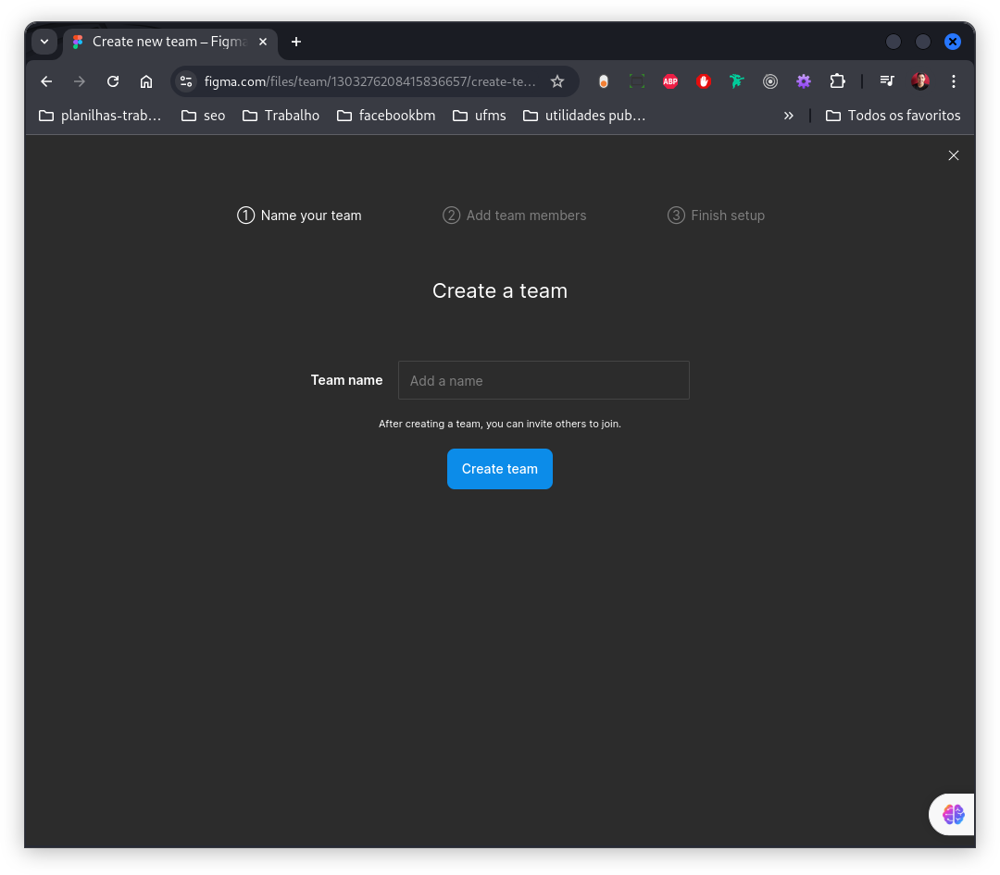
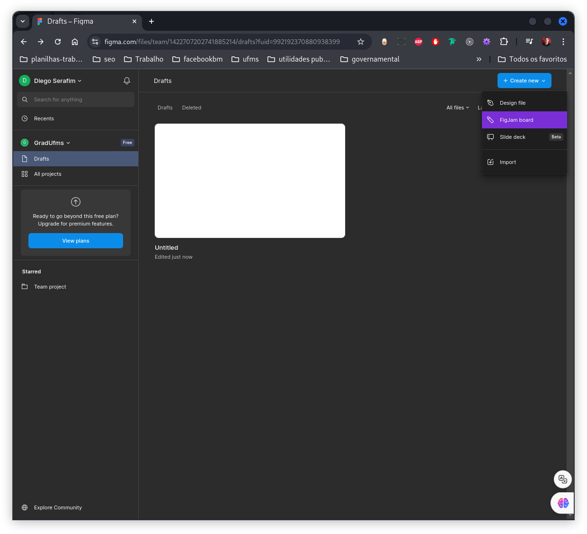
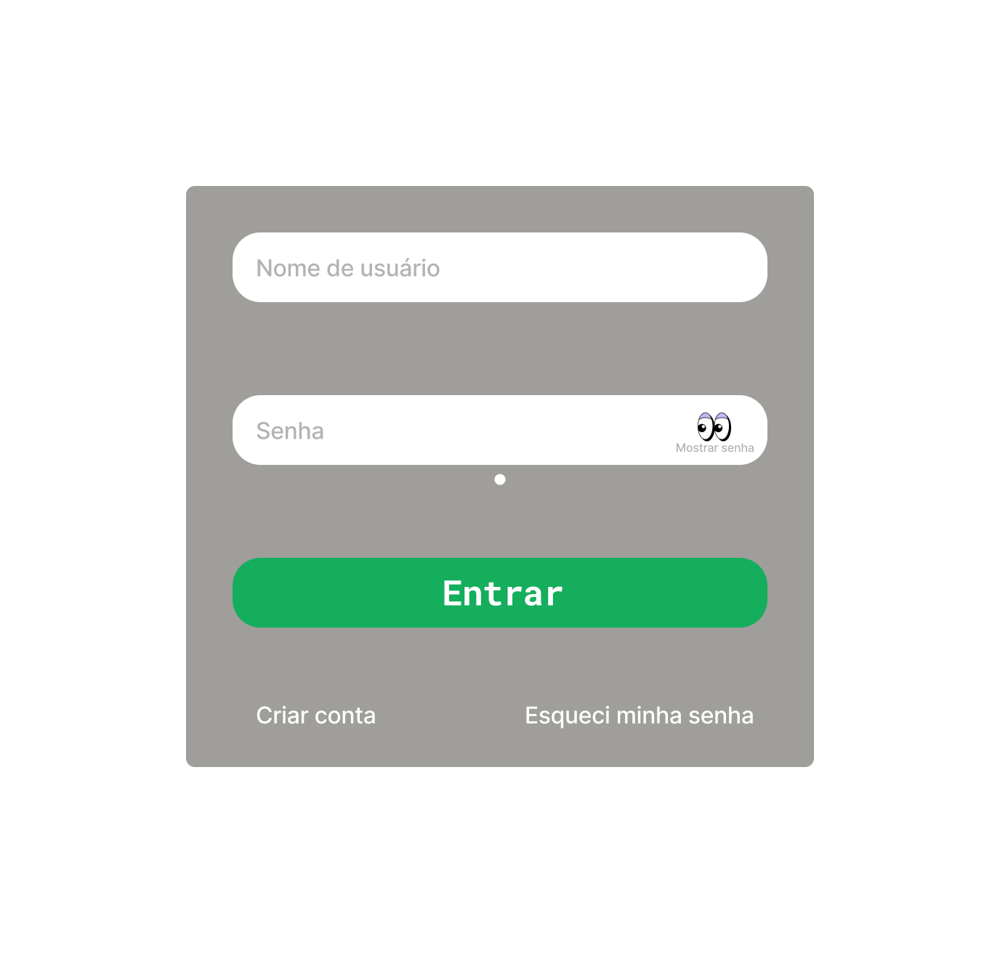

Disciplinas
INTERFACE HUMANO-COMPUTADOR-T01-2024-2 Concluído
Materiais
Vídeo 2 - Minicurso FIGMA sendProf.ª ministrante: PETee UFRN - PET Engenharia Elétrica
Conteúdo
FIGMA
Figma Official Site | Get Started For Free
Figma
https://www.figma.comCrie um time.
Criando um novo arquivo.
Figma.
Figma é uma ferramenta de design de interface do usuário (UI) baseada em nuvem que permite a colaboração em tempo real entre designers, desenvolvedores e outros membros da equipe. Ele é usado para criar designs de sites, aplicativos móveis e outros produtos digitais.
Como usar o Figma gratuitamenteVocê pode usar o Figma gratuitamente para criar projetos ilimitados e colaborar com até três pessoas. Se você precisar de mais recursos, pode atualizar para um plano pago.
Exemplo de tela de login e senhaAqui está um exemplo de tela de login e senha criada no Figma:
- Campo de nome de usuário:
- Um campo de texto onde o usuário pode inserir seu nome de usuário.
- Campo de senha:
- Um campo de texto onde o usuário pode inserir sua senha.
- Caixa de seleção para mostrar ou ocultar a senha:
- Uma caixa de seleção que permite ao usuário mostrar ou ocultar sua senha.
- Botão para criar uma conta:
- Um botão que permite ao usuário criar uma nova conta.
- Link para redefinir a senha:
- Um link que permite ao usuário redefinir sua senha se a esquecer.
- Abra o Figma e crie um novo projeto.
- Adicione um novo quadro ao projeto.
- Adicione um campo de texto ao quadro e nomeie-o "Nome de usuário".
- Adicione outro campo de texto ao quadro e nomeie-o "Senha".
- Adicione uma caixa de seleção ao quadro e nomeie-a "Mostrar senha".
- Adicione um botão ao quadro e nomeie-o "Criar conta".
- Adicione um link ao quadro e nomeie-o "Esqueci minha senha".
- Personalize a aparência da tela de login e senha conforme necessário.
Use atalhos de teclado para acelerar seu fluxo de trabalho.
Use componentes para criar elementos de interface do usuário reutilizáveis.
Use estilos para aplicar estilos consistentes a seus designs.
Use comentários para colaborar com outros membros da equipe.
Use o recurso de revisão para obter feedback sobre seus designs.
Conclusão